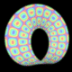

{kind=link}
67K

152K

105K

119K

70K

104K

51K

36K

53K

207K
I have tryed to investigate variouse techniques of representing mathematiacal surfaces in VRML (Virtual Reality Modelling Language) format. In particulary almost all of them have variouse kind of colour texture, which may be used to represents additional information on surface. If your VRML browsers doesn't support textures, you can get larger still picture by clicking on corresponding icon.
Uncompressed VRML files are quite large (some up to 500K in size), therefore they are compressed using gzip. If your browser doesn't understand it, that means that something is wrong with you browser :-).
|  | VRML 67K |
Moebus strip (one side surface) |
|
|
VRML 152K |
Boy's surface. |
|
|
VRML 105K |
Transformation of Boy's surface (Venus). |
|
|
VRML 119K |
Another transformation of Boy's surface. |
|
|
VRML 70K |
Eight shaped Klein bottle. |
|
|
VRML 104K |
Roman surface. |
|
|
VRML 51K |
Enneper's surface (minimal surface - surface with zero mean curvature) |
|
|
VRML 36K |
Crumpled torus (color corresponds to direction of normal). |
|
|
VRML 53K |
Unshaved torus (normals itself are shown). |
|
|
VRML 207K |
Coloured torus. |
Comments, opinions, suggestions, questions are welcome. More graphics and animation you can find at my home page. What about MPEG movies?


 e-mail:V.Bulatov@ic.ac.uk
e-mail:V.Bulatov@ic.ac.uk